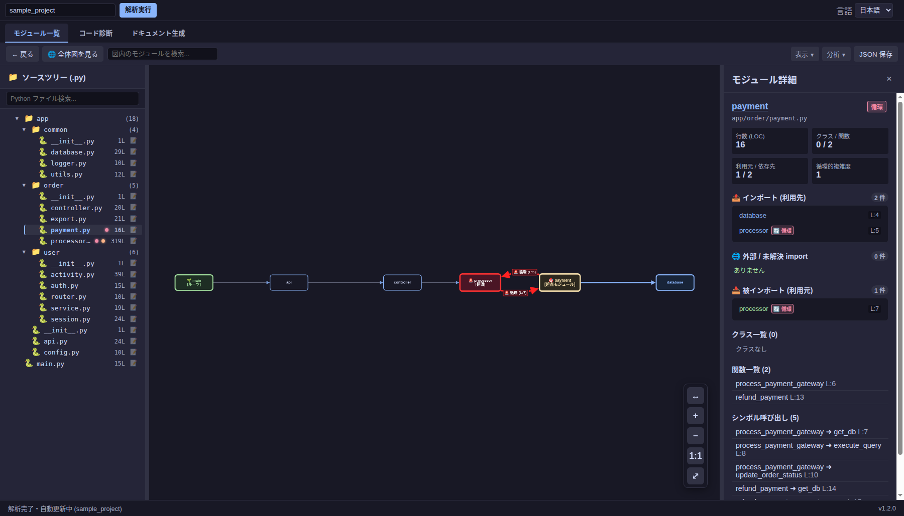
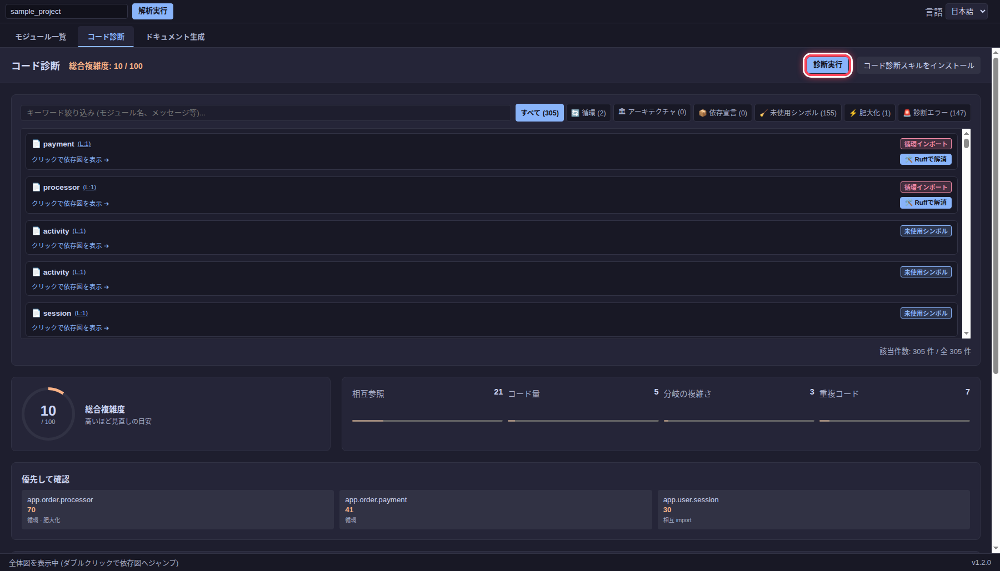
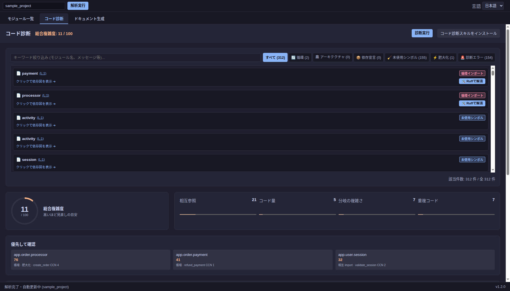
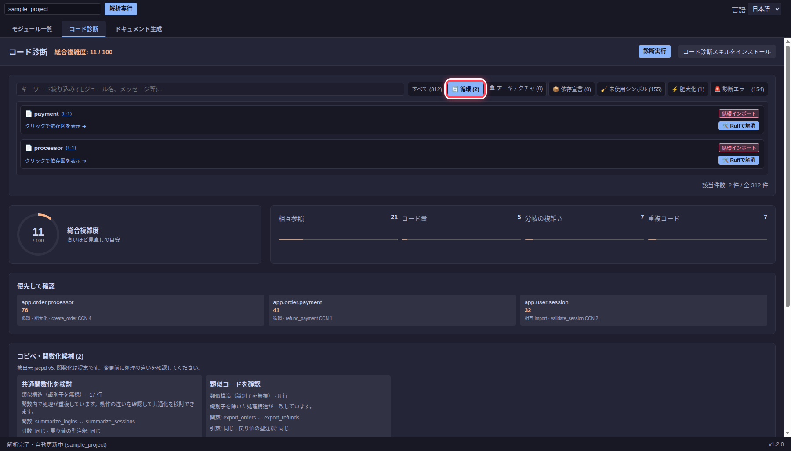

循環インポートとコード診断
循環インポートを確認する
sample_project には app.order.payment と app.order.processor の循環インポートがあります。依存図では該当ノードと矢印が赤く表示されます。payment.py を選ぶと、右側の import 一覧に processor への参照と行番号が表示されます。

循環の片方の import だけを変更しても、別の経路が残る場合があります。両ファイルの import 文と実行時の参照を確認し、変更後に再解析してください。
コード診断を実行する
コード診断タブを開き、診断実行を押します。結果には循環、肥大化、重複コード、型チェックなどの指摘が表示されます。外部の診断ツールが利用できない項目は、画面の警告を確認してください。

問題一覧の上部には、種類別のフィルターとキーワード欄があります。指摘を選ぶと関連するモジュールの依存図へ移動できます。総合複雑度は修正の優先順位を考えるための目安です。

循環を選ぶと、循環に関係する指摘だけを表示できます。画像の例では payment と processor の 2 件が表示されています。

修正候補が表示される場合は差分を確認してから適用します。診断結果は候補なので、変更の妥当性はコードとテストで判断してください。修正後は 診断実行を再度押して結果を確認します。